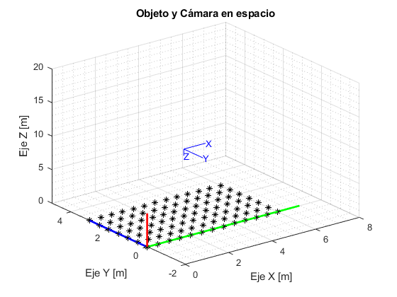
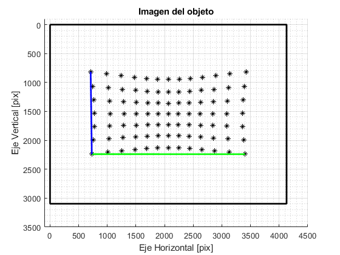

Contents
clear all; close all; clc;
PARÁMETROS (experimentos)
% Activación de efectos de distorsion distorsion=1; % 0 == No distorsión || 1 == Distorsión %Posición y orientación relativa de {C} respecto a {W} dx=3; %Distancia entre cámara y objeto respecto x_w dy=1.5; %Distancia entre cámara y objeto respecto y_w dz=10; %Distancia entre cámara y objeto respecto z_w psi = 0; % Ángulo de rotación respecto a eje Z. theta = 0; % Ángulo de rotación respecto a eje Y'. phi = pi; % Ángulo de rotación respecto a eje X''.
DEFINICIÓN DEL OBJETO (Puntos a proyectar)
nx=13; %Número de posiciones en x ny=7; %Número de posiciones en y nt=nx*ny; %Número total de puntos inc_x=0.5; %distancia entre puntos en x (ejes W) inc_y=0.5; %distancia entre puntos en y (ejes W) MP=zeros(3,nx*ny); %Matriz de puntos respecto a W x=0;y=0;k=1; for j=1:ny for i=1:nx MP(1,k)=x; MP(2,k)=y; MP(3,k)=0; x=x+inc_x; k=k+1; end y=y+inc_y; x=0; end
PARÁMETROS DE LA CÁMARA
f = 0.0042; %Distancia focal N = 4128; %Resolución de la imagen (ancho) M = 3096; %Resolución de la imagen (alto) anchoSensor = 0.00496; %Tamaño del sensor (ancho) altoSensor = 0.00352; %Tamaño del sensor (alto) rho_x = anchoSensor/N; %Dimensión efectiva del píxel (horizontal) rho_y = altoSensor/M; %Dimensión efectiva del píxel (vertical) fx = f/rho_x; %Longitud focal efectiva horizontal fy = f/rho_y; %Longitud focal efectiva vertical s = 0; % Skew u0 = round(N/2)+1; %Punto principal horizontal de la imagen v0 = round(M/2)-2; %Punto principal vertical de la imagen %Coeficientes de distorsion radial kr1=0.144*20; kr2=-0.307*10; %Coeficientes de distorsion tangencial kt1=-0.0032; kt2=0.0017; % Matriz de proyección simple: Kf = [ f 0 0 0 0 f 0 0 0 0 1 0 ]; % Matriz de parámetros intrísecos: K = [ fx s*fx u0 0 fy v0 0 0 1 ];
POSICIÓN RELATIVA ENTRE CÁMARA Y OBJETO
% Posición del origen de {C} respecto al sistema {W}: wtc = [dx,dy,dz]'; % Orientación {C} respecto al sistema {W}. En general dada por sucesión de tres giros (convenio ZYX ejes móviles): Rz = [ cos(psi) -sin(psi) 0 sin(psi) cos(psi) 0 0 0 1 ]; Ry = [ cos(theta) 0 sin(theta) 0 1 0 -sin(theta) 0 cos(theta) ]; Rx = [ 1 0 0 0 cos(phi) -sin(phi) 0 sin(phi) cos(phi) ]; wRc = Rz*Ry*Rx; % Matriz de rotación {C} a {W} wTc = [wRc wtc; [0 0 0 1]]; % Matriz de transformación homogénea {C} a {W} % Obtenemos cTm a partir de wTc obteniendo su inversa %cTw = inv(wTc); % Matriz de transformación homogénea {W} a {C} cTw = [wRc', -wRc'*wtc; [0 0 0 1]]; % Forma más eficiente cRw = cTw(1:3,1:3); % Matriz de rotación de la transformación {W} a {C} ctw = cTw(1:3,4); % Vector de traslación de la transformación {W} a {C}
Proyección de los puntos del objeto a la imagen
%CON DISTORSIÓN if(distorsion==1) MP_ = [MP ; ones(1,nt)]; %Matriz de puntos en homogeneas mpc_ = Kf * cTw * MP_ ; %Matriz de puntos en coordenadas homogeneas respecto a {C} mpc(1:2,:)= mpc_(1:2,:)./mpc_(3,:); %Matriz de puntos en coordenadas estandar respecto a {C} mpDist = zeros(size(mpc)); for i=1:nt pNorm = mpc(:,i)/f; %Pasa el punto a coordenadas proyectadas normalizadas r = norm(pNorm); %Cálculo del radio deltaR = 1 + kr1*r^2 + kr2*r^4; % Distorsion radial deltaTx=2*kt1*pNorm(1)*pNorm(2)+kt2*(r^2+2*pNorm(1)^2); % Distorsion tangencial en x deltaTy=2*kt2*pNorm(1)*pNorm(2)+kt1*(r^2+2*pNorm(2)^2); % Distorsion tangencial en y mpDist(:,i) = ((pNorm * deltaR) + [deltaTx ; deltaTy])*f; % Matriz de puntos distorsionados end mp(1,:)= round(mpDist(1,:)/rho_x + ones(1,nt)*u0); % Discretizacion de los puntos de la imagen mp(2,:)= round(mpDist(2,:)/rho_y + ones(1,nt)*v0); % Discretizacion de los puntos de la imagen %SIN DISTORSIÓN elseif(distorsion==0) MP_ = [MP ; ones(1,nt)]; %Matriz de puntos en homogeneas mp_ = K * [cRw ctw] * MP_ ; %Matriz de puntos en coordenadas homogeneas respecto a {C} (en pixeles) mp(1:2,:)= round(mp_(1:2,:)./mp_(3,:)); %Matriz de puntos en coordenadas estandar respecto a {C} (en pixeles) end
Representaciones
figura3d(MP(1,:),MP(2,:),MP(3,:),wTc) %Objeto y Cámara en el espacio figuraImagen(mp(1,:),mp(2,:),M,N,nx,ny) %Imagen generada en la cámara 